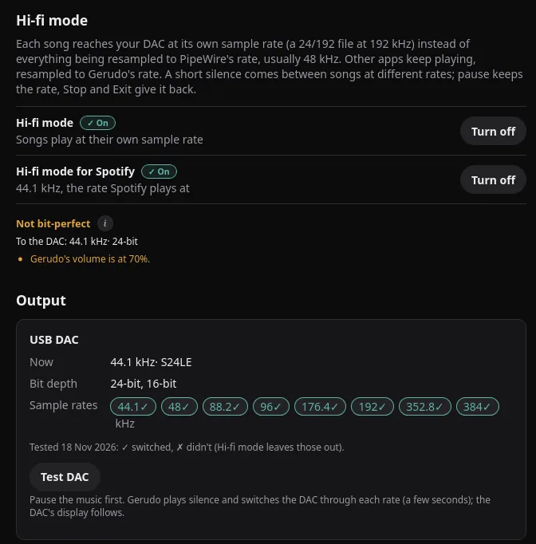

Hi-fi mode
Bit-perfect.
And it can prove it.
Most players hand every song to the system at one fixed rate and let it resample the rest. Gerudo sends each song to your DAC exactly as the file was made, and watches the whole path to tell you if anything changed it.
The quiet problem
Your 24/96 album was playing at 48 kHz.
On a Linux desktop, the sound system runs at one rate, usually 48 kHz, and quietly converts everything to it. A CD rip at 44.1 kHz, a hi-res album at 96 or 192: all resampled, every time.
- Each song at its own rateWith Hi-fi mode on, Gerudo switches your DAC for every song: 44.1 for a CD rip, 192 for a hi-res master. A moment of silence between songs at different rates is the only sign.
- Other apps keep playingNotifications and videos still work; they're the ones converted now, not your music.
- Nothing left behindPause keeps the rate. Stop or exit, and the system gets its normal rate back.

No audiophile guesswork
It tells you when it isn't bit-perfect. And why.
Gerudo reads what really reaches the DAC, rate, format and device, and compares it with the file. If something is in the way, it says what.
- "Not bit-perfect: volume at 70%"Software volume changes the samples, so it says so. Turn Gerudo up and the DAC or amplifier down, and the warning goes away.
- Test your DACOne button plays silence and switches your DAC through every rate from 44.1 to 384 kHz, then remembers which ones it really accepted. Hi-fi mode only uses those.
- The panel behind the badgeTap any quality badge for the full story: the file, what was decoded, what the system got and what the output device runs at.

Beyond your own files
The same care for Spotify, and for the phone.
Spotify, lossless
On the computer, Spotify plays inside Gerudo, never through a browser. Hi-fi mode for Spotify sets the DAC to 44.1 kHz, the rate Spotify streams at, and the quality panel shows what Spotify actually sends, such as lossless FLAC.
24 bits on Android
The phone plays the original file too, and hands 24-bit music to Android without cutting it to 16 bits. Checks spot what Android does next, like a speaker that only takes 48 kHz.
Original files, always
Your server sends the file you ripped, never a converted copy: no transcoding, no "normalising", no crossfades layered on top. What the badge says is what plays.
In progress: bit-perfect playback from the phone to a USB DAC is planned. Today the phone delivers every bit to Android, and the checks say plainly what Android does after that.